Why AI coding costs what it costs —
and what you get for it
Self-hosted analytics for Claude Code sessions
Open source by DataArt · MIT · no hosted service, your data stays with you
{{site:url}}
The problem
right and useful
✓ cost is tracked
Illustrative example
per session and across the team
{{site:url}}
A · Why it costs this much
{{site:url}}
A · Why it costs this much
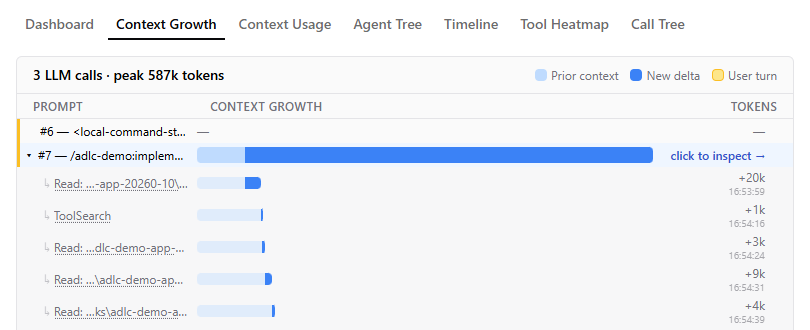
⋯ same prompt, an hour later ⋯
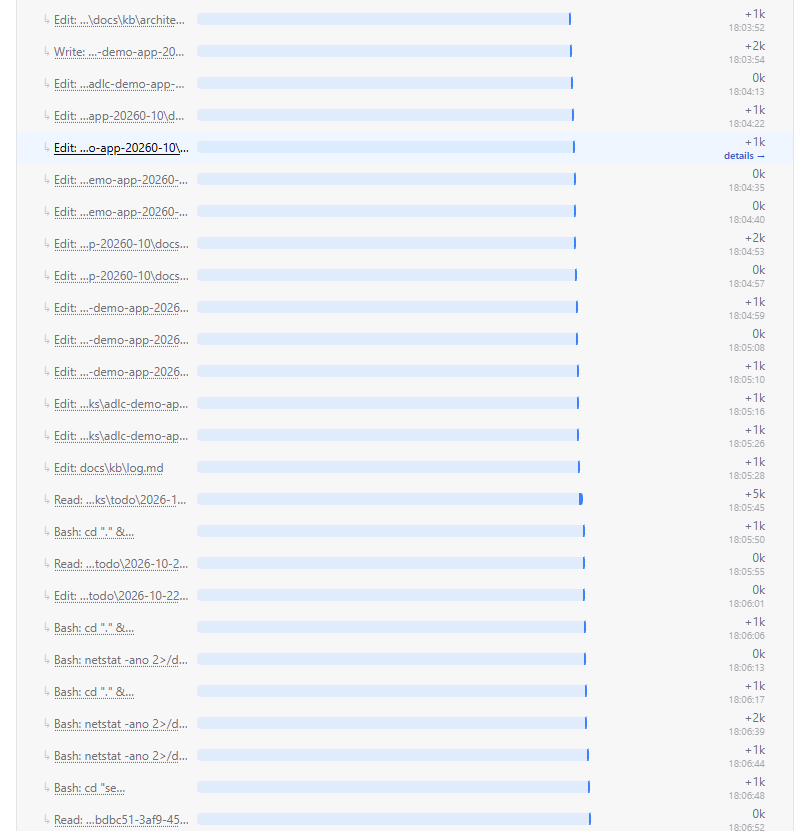
{{site:url}}
A · Why it costs this much
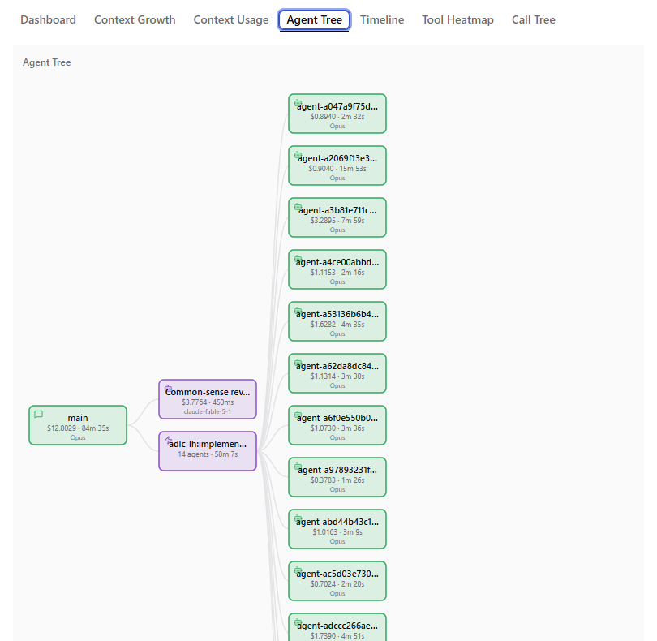
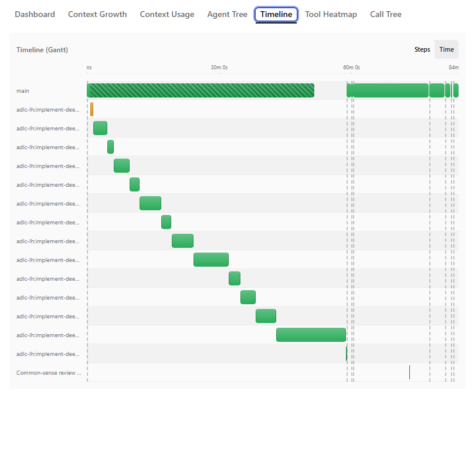
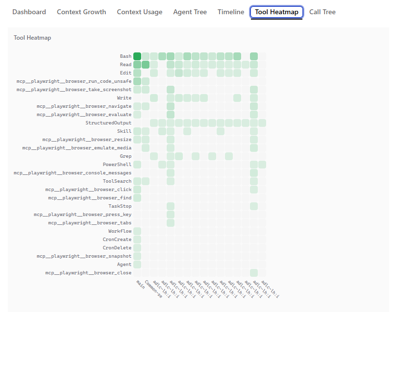
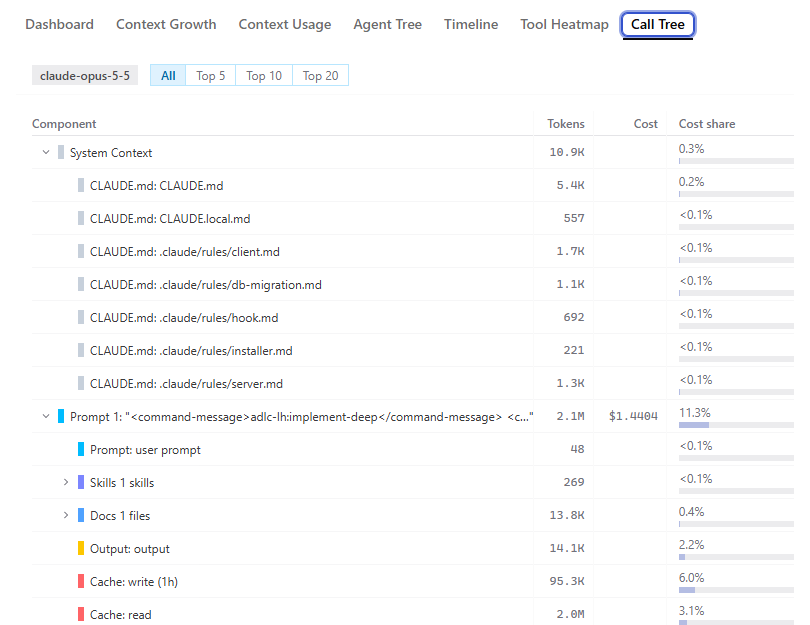
{{site:url}}
B · Does the harness work?
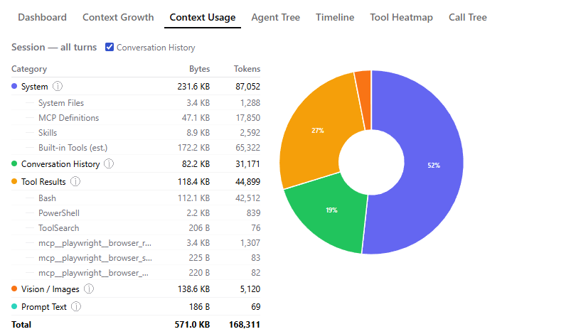
{{site:url}}
B · Does the harness work?
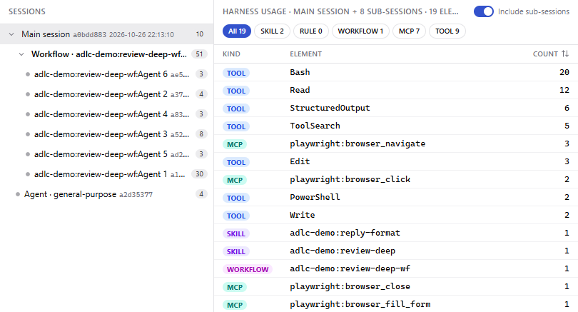
{{site:url}}
C · What does it bring?
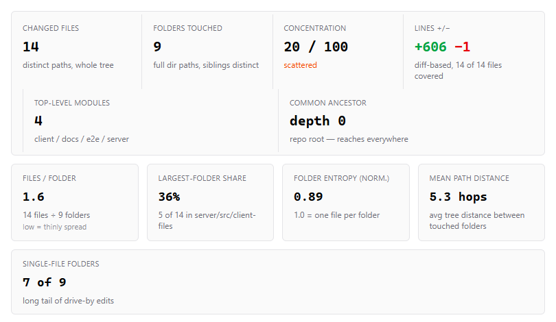
{{site:url}}
D · Across the team
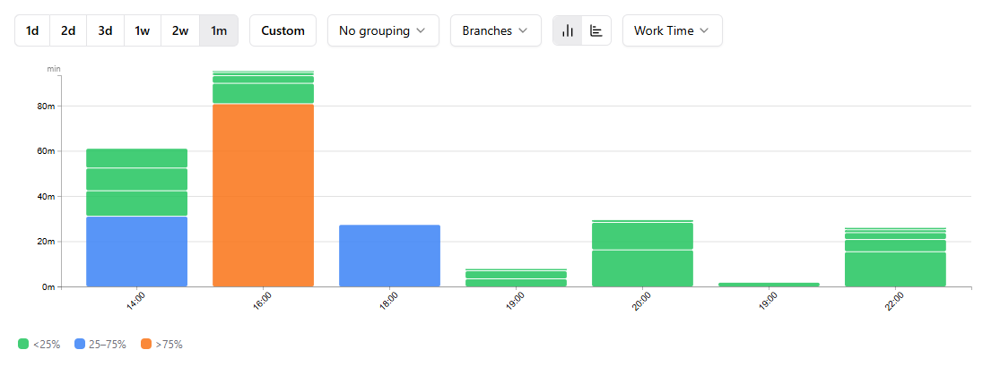
{{site:url}}
D · Across the team
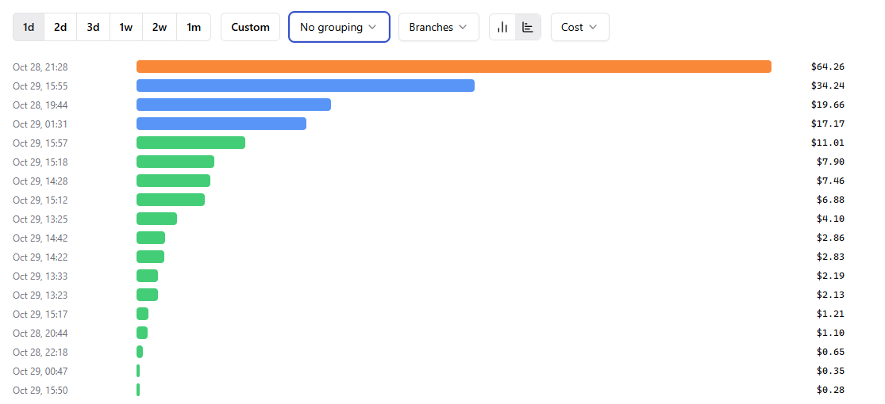
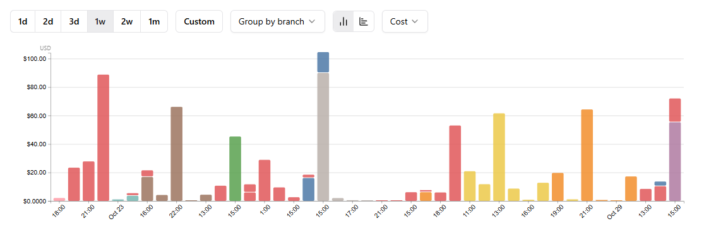
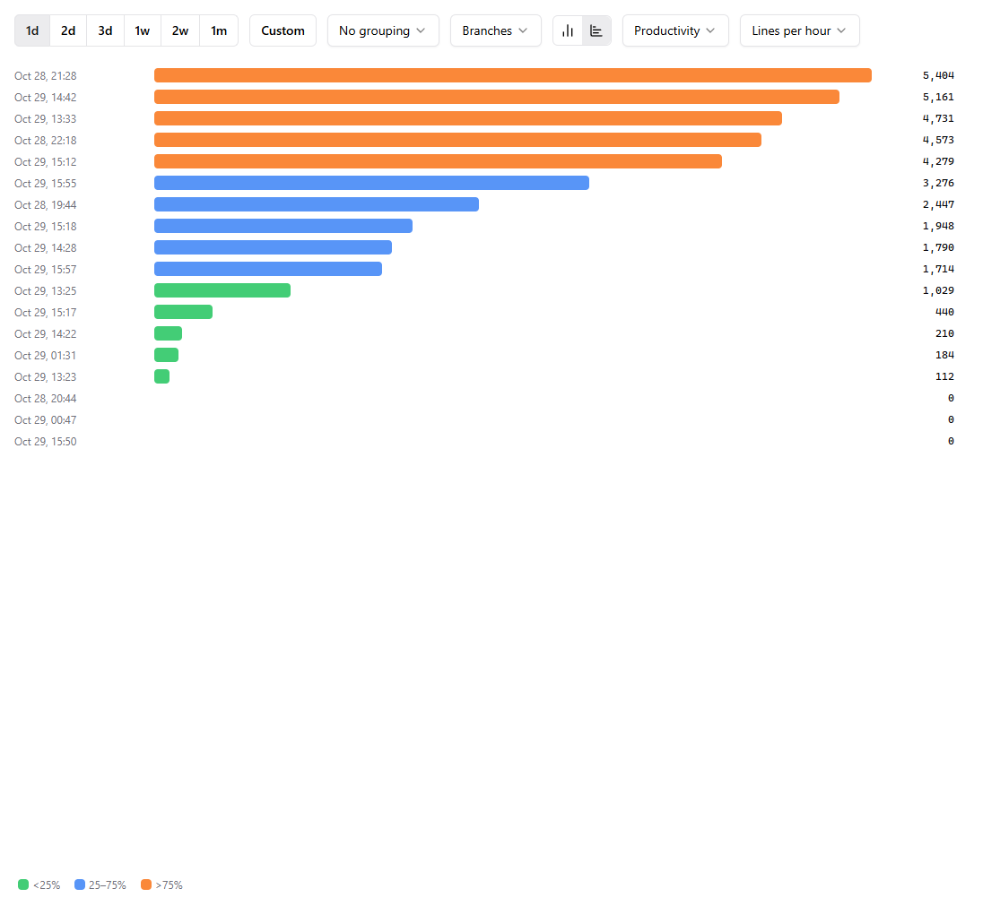
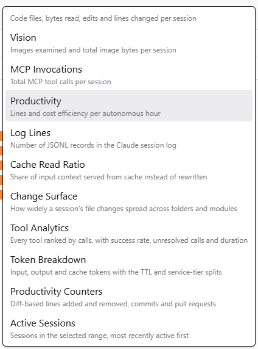
{{site:url}}
D · Across the team
What the reports surface — value vs baseline
{{site:url}}
E · Does this tool work?
| Tool | Calls | Errors | Retried |
|---|---|---|---|
| {{ds:tools.0.name}} | {{ds:tools.0.calls}} | {{ds:tools.0.errorPct|pct}} | {{ds:tools.0.retriedPct|pct}} |
| {{ds:tools.1.name}} | {{ds:tools.1.calls}} | {{ds:tools.1.errorPct|pct}} | {{ds:tools.1.retriedPct|pct}} |
| {{ds:tools.2.name}} | {{ds:tools.2.calls}} | {{ds:tools.2.errorPct|pct}} | {{ds:tools.2.retriedPct|pct}} |
{{site:url}}
E · Does this tool work?
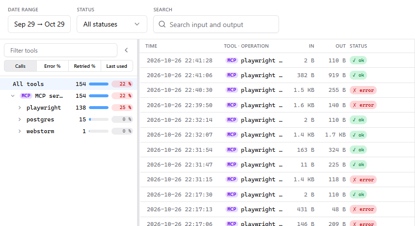
{{site:url}}
F · Where does the data go?
What crosses the boundary
* except a once-a-day public GET of the model price list (and of the Claude Code
version list) — nothing is sent; switch them off and nothing leaves the host at all.
Optional post-turn analysis (cost advisor, session attribution) runs claude -p on the
developer's machine through the same Claude connection the session already uses — no new
destination; switched per repository.
{{site:url}}
F · Where does the data go?
Collected · visible to · kept for
Ships with a security hardening guide, a known-limitations table and a RACI responsibility matrix. The hook only observes — it never blocks a tool call.
{{site:url}}
Open source by DataArt · MIT · install on one of your hosts, hook one repository
{{site:url}}